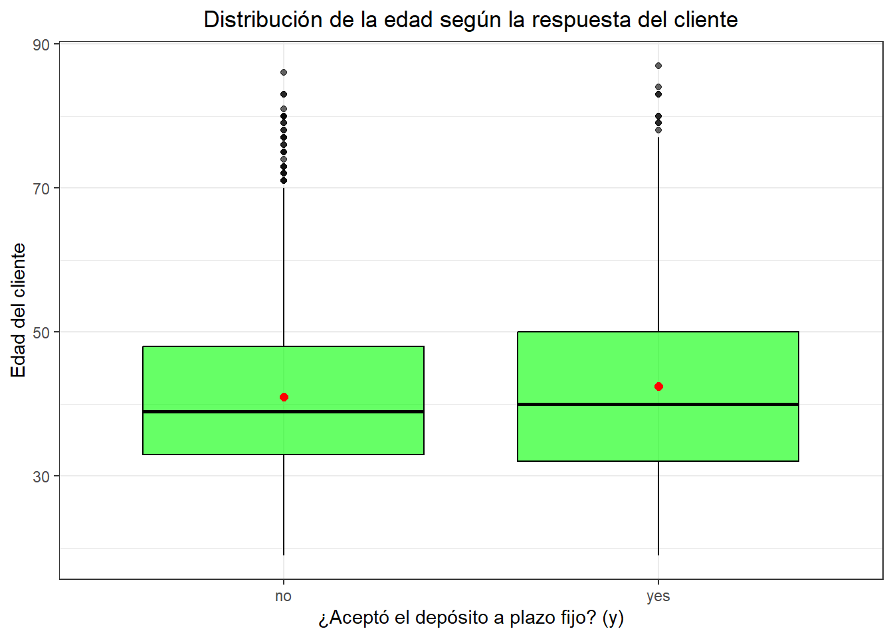

Chapter 3 #Comienzo del EDA
a01e76bbe664f91b922facc674643ce679eb29f3
## age job marital education default balance housing loan contact day
## 1 30 unemployed married primary no 1787 no no cellular 19
## 2 33 services married secondary no 4789 yes yes cellular 11
## 3 35 management single tertiary no 1350 yes no cellular 16
## 4 30 management married tertiary no 1476 yes yes unknown 3
## 5 59 blue-collar married secondary no 0 yes no unknown 5
## month duration campaign pdays previous poutcome y
## 1 oct 79 1 -1 0 unknown no
## 2 may 220 1 339 4 failure no
## 3 apr 185 1 330 1 failure no
## 4 jun 199 4 -1 0 unknown no
## 5 may 226 1 -1 0 unknown no## [1] 4521 17## [1] "age" "job" "marital" "education" "default" "balance"
## [7] "housing" "loan" "contact" "day" "month" "duration"
## [13] "campaign" "pdays" "previous" "poutcome" "y"## 'data.frame': 4521 obs. of 17 variables:
## $ age : int 30 33 35 30 59 35 36 39 41 43 ...
## $ job : chr "unemployed" "services" "management" "management" ...
## $ marital : chr "married" "married" "single" "married" ...
## $ education: chr "primary" "secondary" "tertiary" "tertiary" ...
## $ default : chr "no" "no" "no" "no" ...
## $ balance : int 1787 4789 1350 1476 0 747 307 147 221 -88 ...
## $ housing : chr "no" "yes" "yes" "yes" ...
## $ loan : chr "no" "yes" "no" "yes" ...
## $ contact : chr "cellular" "cellular" "cellular" "unknown" ...
## $ day : int 19 11 16 3 5 23 14 6 14 17 ...
## $ month : chr "oct" "may" "apr" "jun" ...
## $ duration : int 79 220 185 199 226 141 341 151 57 313 ...
## $ campaign : int 1 1 1 4 1 2 1 2 2 1 ...
## $ pdays : int -1 339 330 -1 -1 176 330 -1 -1 147 ...
## $ previous : int 0 4 1 0 0 3 2 0 0 2 ...
## $ poutcome : chr "unknown" "failure" "failure" "unknown" ...
## $ y : chr "no" "no" "no" "no" ...## ── Attaching core tidyverse packages ──────────────────────── tidyverse 2.0.0 ──
## ✔ dplyr 1.1.4 ✔ readr 2.1.5
## ✔ forcats 1.0.0 ✔ stringr 1.5.1
## ✔ ggplot2 3.5.2 ✔ tibble 3.3.0
## ✔ lubridate 1.9.4 ✔ tidyr 1.3.1
## ✔ purrr 1.1.0
## ── Conflicts ────────────────────────────────────────── tidyverse_conflicts() ──
## ✖ dplyr::filter() masks stats::filter()
## ✖ dplyr::lag() masks stats::lag()
## ℹ Use the conflicted package (<http://conflicted.r-lib.org/>) to force all conflicts to become errors## age job marital education default balance housing loan contact
## 1 30 unemployed married primary no 1787 no no cellular
## 2 33 services married secondary no 4789 yes yes cellular
## 3 35 management single tertiary no 1350 yes no cellular
## 4 30 management married tertiary no 1476 yes yes unknown
## 5 59 blue-collar married secondary no 0 yes no unknown
## duration campaign pdays poutcome y
## 1 79 1 -1 unknown no
## 2 220 1 339 failure no
## 3 185 1 330 failure no
## 4 199 4 -1 unknown no
## 5 226 1 -1 unknown no## NA_age NA_job NA_marital NA_education NA_default NA_balance NA_housing
## 1 0 0 0 0 0 0 0
## NA_loan NA_contact NA_duration NA_campaign NA_pdays NA_poutcome NA_y
## 1 0 0 0 0 0 0 0 tabla_y <- df %>%
count(y, name = "Frecuencia") %>%
mutate(Porcentaje = round(Frecuencia/sum(Frecuencia)*100,1),
Etiqueta = paste0(Frecuencia, " (", Porcentaje, "%)"))
tabla_y %>%
ggplot(aes(x = factor(y), y = Frecuencia)) +
geom_col(fill = "purple", width = 0.6) +
geom_text(aes(label = Etiqueta), vjust = -0.5, size = 3) +
facet_grid(~ "Distribucion interes de deposito a plazo fijo (no/yes)") +
scale_y_continuous(expand = expansion(mult = c(0, 0.15))) +
labs(x = "Interes por el deposito a plazo fijo", y = "Numero de clientes (Porcentaje)") +
#coord_flip() +
theme_bw(base_size = 14) +
theme(
plot.title = element_blank(),
strip.background = element_rect(fill = "gray80", color = NA),
strip.text = element_text(face = "bold"),
panel.grid.major.y = element_blank(),
axis.text.y = element_text(size = 8)
)  #Analisis de la tabla y el grafico de barras de la variable “y” (objetivo) En ambas representaciones visuales, se evidencia que existe una gran mayoria de los clientes, los cuales no estan interesados en hacer parte de la oferta de deposito a plazo fijo con un total de 4000 usuarios (88.55% de la muestra), asi mismo pues, la gran minoria de los encuestados dijo que si a dicha oferta siendo estos el 11.5% de las personas (521 en total). Estos marcadores indican el desbalance que se presenta en la variable objetivo, y que es de sumo cuidado tener en cuenta este desequilibrio para llevar a cabo los modelos predictivos.
#Tabla de las variables numericas independientes
df %>%
summarise(
n = length(age),
media = mean(age),
desviacion = sd(age),
mediana = median(age),
minimo = min(age),
maximo = max(age),
Q1 = quantile(age, 0.25),
Q3 = quantile(age, 0.75),
IQR = IQR(age)) %>%
mutate(variable = "age") -> variable_age
df %>%
summarise(
n = length(balance),
media = mean(balance),
desviacion = sd(balance),
mediana = median(balance),
minimo = min(balance),
maximo = max(balance),
Q1 = quantile(balance, 0.25),
Q3 = quantile(balance, 0.75),
IQR = IQR(balance)) %>%
mutate(variable = "balance") -> variable_balance
df %>%
summarise(
n = length(duration),
media = mean(duration),
desviacion = sd(duration),
mediana = median(duration),
minimo = min(duration),
maximo = max(duration),
Q1 = quantile(duration, 0.25),
Q3 = quantile(duration, 0.75),
IQR = IQR(duration)) %>%
mutate(variable = "duration")-> variable_duration
df %>%
summarise(
n = length(campaign),
media = mean(campaign),
desviacion = sd(campaign),
mediana = median(campaign),
minimo = min(campaign),
maximo = max(campaign),
Q1 = quantile(campaign, 0.25),
Q3 = quantile(campaign, 0.75),
IQR = IQR(campaign)) %>%
mutate(variable = "campaign")-> variable_campaign
df %>%
summarise(
n = length(pdays),
media = mean(pdays),
desviacion = sd(pdays),
mediana = median(pdays),
minimo = min(pdays),
maximo = max(pdays),
Q1 = quantile(pdays, 0.25),
Q3 = quantile(pdays, 0.75),
IQR = IQR(pdays)) %>%
mutate(variable = "pdays")-> variable_pdays
bind_rows(variable_age, variable_balance, variable_duration,variable_campaign,variable_pdays) %>%
select(variable, everything())## variable n media desviacion mediana minimo maximo Q1 Q3 IQR
## 1 age 4521 41.17010 10.576211 39 19 87 33 49 16
## 2 balance 4521 1422.65782 3009.638142 444 -3313 71188 69 1480 1411
## 3 duration 4521 263.96129 259.856633 185 4 3025 104 329 225
## 4 campaign 4521 2.79363 3.109807 2 1 50 1 3 2
## 5 pdays 4521 39.76664 100.121124 -1 -1 871 -1 -1 0<<<<<<< HEAD # Interpretacion tabla Por medio de un analisis estadistico, se evidencia un promedio de edad en los clientes del banco portugues de 41 años, con un rango que arranca desde los 19 años hasta los 87 como el dato maximo registrado, lo que muestra una poblacion adulta diversificada. El saldo promedio anual en las cuentas bancarias muestra una media de 1422 USD y una alta desviacion (Desviacion = 3009); además de unos valores extremos que abarcan saldos en numeros negativos como saldos bastante elevados (Maximo = 71188). Por otro lado, la duracion de las llamadas evidencia una media muestral de 264 segundos aproximadamente, y una desviacion considerable de 259 segundos; la mediana, es decir, el 50% de los datos es menor o igual a 185 segundos, y la duracion de estas llamadas esta comprendida en un intervalo que va desde los 4 segundos hasta los 3025, lo que simboliza una alta dispersion en los datos, y que por tanto puede derivar en sesgos.En relación con el número de contactos durante la campaña (campaign), se registra un promedio de 2,79 contactos (Desviacion = 3,11), con el 50 % de los casos por debajo de 2. Aunque se presentan valores extremos de hasta 50 contactos, la mayoría de los clientes fue contactada pocas veces, tal como refleja el rango intercuartílico comprendido entre los percentiles P25 y P75 (lo mismo que decir Q1 y Q3). A su vez, la variable pdays, que representa los días transcurridos desde el último contacto en campañas anteriores, muestra una media de 39,77 días (Desviacion = 100,12 días). Sin embargo, tanto la mediana como los percentiles P25 y P75 se encuentran en −1, lo que indica que la mayoría de los clientes no había sido contactada previamente. Aun así, existen registros que superan los 800 días, lo que evidencia comportamientos heterogéneos y la posible existencia de distintos segmentos dentro de la base de clientes. #Graficos boxplot (caja y bigotes) de las variables numericas
##
## Adjuntando el paquete: 'gridExtra'## The following object is masked from 'package:dplyr':
##
## combine# Boxplot de age
df %>%
ggplot(aes(x = "", y = age)) +
geom_boxplot(fill = "#1f77b4", alpha = 0.7) +
stat_summary(fun = mean, geom = "point", shape = 18, size = 4, color = "black") +
labs(
title = "Distribución de la edad",
y = "Años",
x = ""
) +
theme_bw() #Interpretacion
El boxplot muestra que la mayoría de las edades se concentran entre 32 y 48 años, con una mediana cercana a 38 y un promedio ligeramente mayor, lo que indica una ligera asimetría hacia edades más altas. El rango total (sin contar atípicos) va de unos 22 a 72 años, y se observan varios outliers entre 72 y 90 años, lo que sugiere que, aunque la distribución es relativamente compacta, existen casos aislados de personas considerablemente mayores.
# Boxplot de balance
#Interpretacion
El boxplot muestra que la mayoría de las edades se concentran entre 32 y 48 años, con una mediana cercana a 38 y un promedio ligeramente mayor, lo que indica una ligera asimetría hacia edades más altas. El rango total (sin contar atípicos) va de unos 22 a 72 años, y se observan varios outliers entre 72 y 90 años, lo que sugiere que, aunque la distribución es relativamente compacta, existen casos aislados de personas considerablemente mayores.
# Boxplot de balance
df %>%
ggplot(aes(x = "", y = balance)) +
geom_boxplot(fill = "#2f43b1", alpha = 0.7) +
stat_summary(fun = mean, geom = "point", shape = 18, size = 4, color = "black") +
labs(
title = "Distribución del balance de la cuenta",
y = "Usd",
x = ""
) +
theme_bw() #Interpretacion
La distribución del balance de la cuenta muestra una fuerte asimetría positiva, con la mayoría de los saldos concentrados cerca de valores bajos y un gran número de valores atípicos que alcanzan hasta 71,188 USD. El balance promedio es de 1,422.66 USD (Desviacion = 3,009.64), mientras que la mediana es de solo 444 USD, lo que refleja que pocos clientes con saldos muy altos elevan el promedio. Además, se observan saldos negativos mínimos de -3,313 USD, lo que indica sobregiros o deudas, y un rango intercuartílico que va de 69 a 1,480 USD, confirmando que la mayoría de los clientes mantiene balances reducidos.
#Interpretacion
La distribución del balance de la cuenta muestra una fuerte asimetría positiva, con la mayoría de los saldos concentrados cerca de valores bajos y un gran número de valores atípicos que alcanzan hasta 71,188 USD. El balance promedio es de 1,422.66 USD (Desviacion = 3,009.64), mientras que la mediana es de solo 444 USD, lo que refleja que pocos clientes con saldos muy altos elevan el promedio. Además, se observan saldos negativos mínimos de -3,313 USD, lo que indica sobregiros o deudas, y un rango intercuartílico que va de 69 a 1,480 USD, confirmando que la mayoría de los clientes mantiene balances reducidos.
Diagrama de boxplot para duration
df %>%
ggplot(aes(x = "", y = duration)) +
geom_boxplot(fill = "#2ca02c", alpha = 0.7) +
stat_summary(fun = mean, geom = "point", shape = 18, size = 4, color = "black") +
labs(
title = "Distribución de la duración de llamada (duration)",
y = "Segundos",
x = ""
) +
theme_bw() #Interpretacion
La duración de las llamadas presenta una media de aproximadamente 264 segundos (Desviacion = 260), con una mediana de 185 segundos, lo que indica que la mayoría de las llamadas fueron relativamente cortas. El rango intercuartílico va de 104 a 329 segundos, reflejando que el 50 % central de las llamadas dura entre poco menos de 2 y alrededor de 5,5 minutos. Sin embargo, el boxplot revela una marcada asimetría positiva debido a la presencia de múltiples valores atípicos que alcanzan hasta 3025 segundos (más de 50 minutos), lo que sugiere que, aunque la mayoría de las interacciones fueron breves, existen casos puntuales de llamadas excepcionalmente largas.
#Interpretacion
La duración de las llamadas presenta una media de aproximadamente 264 segundos (Desviacion = 260), con una mediana de 185 segundos, lo que indica que la mayoría de las llamadas fueron relativamente cortas. El rango intercuartílico va de 104 a 329 segundos, reflejando que el 50 % central de las llamadas dura entre poco menos de 2 y alrededor de 5,5 minutos. Sin embargo, el boxplot revela una marcada asimetría positiva debido a la presencia de múltiples valores atípicos que alcanzan hasta 3025 segundos (más de 50 minutos), lo que sugiere que, aunque la mayoría de las interacciones fueron breves, existen casos puntuales de llamadas excepcionalmente largas.